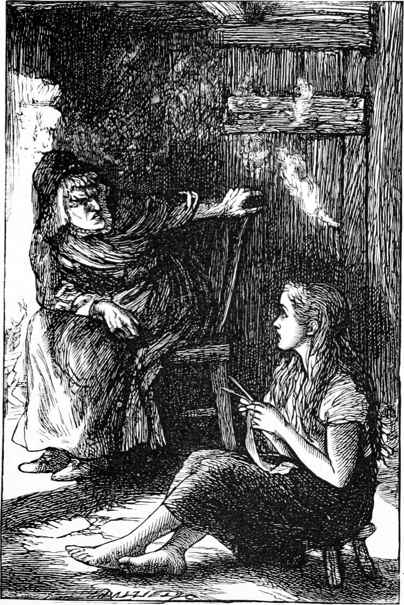

It came in the following winter.
My father had now begun to teach me as well as Tom, but I confess I did not then value the privilege. I had got much too fond of the society of Peter Mason, and all the time I could command I spent with him. Always full of questionable frolic, the spirit of mischief gathered in him as the dark nights drew on. The sun, and the wind, and the green fields, and the flowing waters of summer kept him within bounds; but when the ice and the snow came, when the sky was grey with one cloud, when the wind was full of needle-points of frost and the ground was hard as a stone, when the evenings were dark, and the sun at noon shone low down and far away in the south, then the demon of mischief awoke in the bosom of Peter Mason, and, this winter, I am ashamed to say, drew me also into the net.
Nothing very bad was the result before the incident I am about to relate. There must have been, however, a gradual declension towards it, although the pain which followed upon this has almost obliterated the recollection of preceding follies. Nobody does anything bad all at once. Wickedness needs an apprenticeship as well as more difficult trades.
It was in January, not long after the shortest day, the sun setting about half-past three o’clock. At three school was over, and just as we were coming out, Peter whispered to me, with one of his merriest twinkles in his eyes:
“Come across after dark, Ranald, and we’ll have some fun.”
I promised, and we arranged when and where to meet. It was Friday, and I had no Latin to prepare for Saturday, therefore my father did not want me. I remember feeling very jolly as I went home to dinner, and made the sun set ten times at least, by running up and down the earthen wall which parted the fields from the road; for as often as I ran up I saw him again over the shoulder of the hill, behind which he was going down. When I had had my dinner, I was so impatient to join Peter Mason that I could not rest, and from very idleness began to tease wee Davie. A great deal of that nasty teasing, so common among boys, comes of idleness. Poor Davie began to cry at last, and I, getting more and more wicked, went on teasing him, until at length he burst into a howl of wrath and misery, whereupon the Kelpie, who had some tenderness for him, burst into the room, and boxed my ears soundly. I was in a fury of rage and revenge, and had I been near anything I could have caught up, something serious would have been the result. In spite of my resistance, she pushed me out of the room and locked the door. I would have complained to my father, but I was perfectly aware that, although she had no right to strike me, I had deserved chastisement for my behaviour to my brother. I was still boiling with anger when I set off for the village to join Mason. I mention all this to show that I was in a bad state of mind, and thus prepared for the wickedness which followed. I repeat, a boy never disgraces himself all at once. He does not tumble from the top to the bottom of the cellar stair. He goes down the steps himself till he comes to the broken one, and then he goes to the bottom with a rush. It will also serve to show that the enmity between Mrs. Mitchell and me had in nowise abated, and that however excusable she might be in the case just mentioned, she remained an evil element in the household.
When I reached the village, I found very few people about. The night was very cold, for there was a black frost. There had been a thaw the day before which had carried away the most of the snow, but in the corners lay remnants of dirty heaps which had been swept up there. I was waiting near one of these, which happened to be at the spot where Peter had arranged to meet me, when from a little shop near a girl came out and walked quickly down the street. I yielded to the temptation arising in a mind which had grown a darkness with slimy things crawling in it. I kicked a hole in the frozen crust of the heap, scraped out a handful of dirty snow, kneaded it into a snowball, and sent it after the girl. It struck her on the back of the head. She gave a cry and ran away, with her hand to her forehead. Brute that I was, I actually laughed. I think I must have been nearer the devil then than I have been since. At least I hope so. For you see it was not with me as with worse-trained boys. I knew quite well that I was doing wrong, and refused to think about it. I felt bad inside. Peter might have done the same thing without being half as wicked as I was. He did not feel the wickedness of that kind of thing as I did. He would have laughed over it merrily. But the vile dregs of my wrath with the Kelpie were fermenting in my bosom, and the horrid pleasure I found in annoying an innocent girl because the wicked Kelpie had made me angry, could never have been expressed in a merry laugh like Mason’s. The fact is, I was more displeased with myself than with anybody else, though I did not allow it, and would not take the trouble to repent and do the right thing. If I had even said to wee Davie that I was sorry, I do not think I should have done the other wicked things that followed; for this was not all by any means. In a little while Peter joined me. He laughed, of course, when I told him how the girl had run like a frighted hare, but that was poor fun in his eyes.
“Look here, Ranald,” he said, holding out something like a piece of wood.
“What is it, Peter?” I asked.
“It’s the stalk of a cabbage,” he answered. “I’ve scooped out the inside and filled it with tow. We’ll set fire to one end, and blow the smoke through the keyhole.”
“Whose keyhole, Peter?”
“An old witch’s that I know of. She’ll be in such a rage! It’ll be fun to hear her cursing and swearing. We’d serve the same to every house in the row, but that would be more than we could get off with. Come along. Here’s a rope to tie her door with first.”
I followed him, not without inward misgivings, which I kept down as well as I could. I argued with myself, “I am not doing it; I am only going with Peter: what business is that of anybody’s so long as I don’t touch the thing myself?” Only a few minutes more, and I was helping Peter to tie the rope to the latch-handle of a poor little cottage, saying now to myself, “This doesn’t matter. This won’t do her any harm. This isn’t smoke. And after all, smoke won’t hurt the nasty old thing. It’ll only make her angry. It may do her cough good: I dare say she’s got a cough.” I knew all I was saying was false, and yet I acted on it. Was not that as wicked as wickedness could be? One moment more, and Peter was blowing through the hollow cabbage stalk in at the keyhole with all his might. Catching a breath of the stifling smoke himself, however, he began to cough violently, and passed the wicked instrument to me. I put my mouth to it, and blew with all my might. I believe now that there was some far more objectionable stuff mingled with the tow. In a few moments we heard the old woman begin to cough. Peter, who was peeping in at the window, whispered—
“She’s rising. Now we’ll catch it, Ranald!”

Coughing as she came, I heard her with shuffling steps approach the door, thinking to open it for air. When she failed in opening it, and found besides where the smoke was coming from, she broke into a torrent of fierce and vengeful reproaches, mingled with epithets by no means flattering. She did not curse and swear as Peter had led me to expect, although her language was certainly far enough from refined; but therein I, being, in a great measure, the guilty cause, was more to blame than she. I laughed because I would not be unworthy of my companion, who was genuinely amused; but I was, in reality, shocked at the tempest I had raised. I stopped blowing, aghast at what I had done; but Peter caught the tube from my hand and recommenced the assault with fresh vigour, whispering through the keyhole, every now and then between the blasts, provoking, irritating, even insulting remarks on the old woman’s personal appearance and supposed ways of living. This threw her into paroxysms of rage and of coughing, both increasing in violence; and the war of words grew, she tugging at the door as she screamed, he answering merrily, and with pretended sympathy for her sufferings, until I lost all remaining delicacy in the humour of the wicked game, and laughed loud and heartily.
Of a sudden the scolding and coughing ceased. A strange sound and again silence followed. Then came a shrill, suppressed scream; and we heard the voice of a girl, crying:
“Grannie! grannie! What’s the matter with you? Can’t you speak to me, grannie? They’ve smothered my grannie!”
Sobs and moans were all we heard now. Peter had taken fright at last, and was busy undoing the rope. Suddenly he flung the door wide and fled, leaving me exposed to the full gaze of the girl. To my horror it was Elsie Duff! She was just approaching the door, her eyes streaming with tears, and her sweet face white with agony. I stood unable to move or speak. She turned away without a word, and began again to busy herself with the old woman, who lay on the ground not two yards from the door. I heard a heavy step approaching. Guilt awoke fear and restored my powers of motion. I fled at full speed, not to find Mason, but to leave everything behind me.
When I reached the manse, it stood alone in the starry blue night. Somehow I could not help thinking of the time when I came home after waking up in the barn. That, too, was a time of misery, but, oh! how different from this! Then I had only been cruelly treated myself; now I had actually committed cruelty. Then I sought my father’s bosom as the one refuge; now I dreaded the very sight of my father, for I could not look him in the face. He was my father, but I was not his son. A hurried glance at my late life revealed that I had been behaving very badly, growing worse and worse. I became more and more miserable as I stood, but what to do I could not tell. The cold at length drove me into the house. I generally sat with my father in his study of a winter night now, but I dared not go near it. I crept to the nursery, where I found a bright fire burning, and Allister reading by the blaze, while Davie lay in bed at the other side of the room. I sat down and warmed myself, but the warmth could not reach the lump of ice at my heart. I sat and stared at the fire. Allister was too much occupied with his book to take any heed of me. All at once I felt a pair of little arms about my neck, and Davie was trying to climb upon my knees. Instead of being comforted, however, I spoke very crossly, and sent him back to his bed whimpering. You see I was only miserable; I was not repentant. I was eating the husks with the swine, and did not relish them; but I had not said, “I will arise and go to my father”.
How I got through the rest of that evening I hardly know. I tried to read, but could not. I was rather fond of arithmetic; so I got my slate and tried to work a sum; but in a few moments I was sick of it. At family prayers I never lifted my head to look at my father, and when they were over, and I had said good night to him, I felt that I was sneaking out of the room. But I had some small sense of protection and safety when once in bed beside little Davie, who was sound asleep, and looked as innocent as little Samuel when the voice of God was going to call him. I put my arm round him, hugged him close to me, and began to cry, and the crying brought me sleep.
It was a very long time now since I had dreamt my old childish dream; but this night it returned. The old sunny-faced sun looked down upon me very solemnly. There was no smile on his big mouth, no twinkle about the corners of his little eyes. He looked at Mrs. Moon as much as to say, “What is to be done? The boy has been going the wrong way: must we disown him?” The moon neither shook her head nor moved her lips, but turned as on a pivot, and stood with her back to her husband, looking very miserable. Not one of the star-children moved from its place. They shone sickly and small. In a little while they faded out; then the moon paled and paled until she too vanished without ever turning her face to her husband; and last the sun himself began to change, only instead of paling he drew in all his beams, and shrunk smaller and smaller, until no bigger than a candle-flame. Then I found that I was staring at a candle on the table; and that Tom was kneeling by the side of the other bed, saying his prayers.